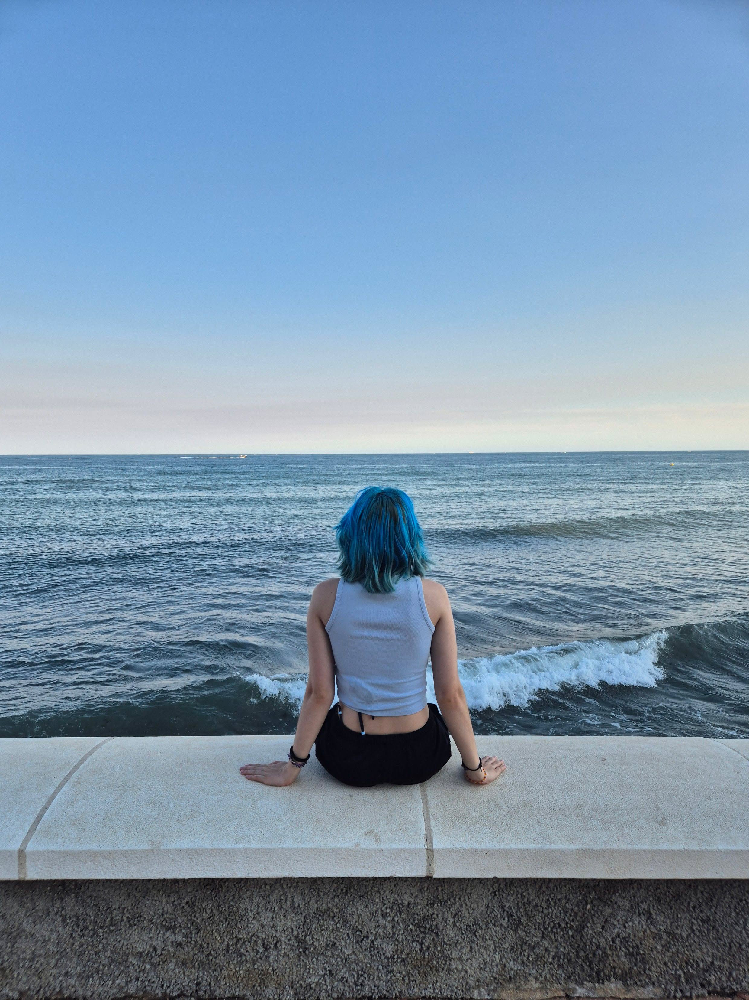

O mně

Ahoj, jsem Agáta.
Fotím už nějakou dobu a fotografie mě baví hlavně proto, že mi umožňuje zachytit věci, kterých bych si jinak možná ani nevšimla. Nejčastěji fotím přírodu, město, moře, východy a západy slunce, ale vlastně ráda vezmu foťák všude, kam jdu.
Baví mě hledat zajímavé světlo, barvy a momenty, které mají nějakou atmosféru. Nemám jeden konkrétní styl ani se nechci držet jen jednoho typu fotografie, baví mě zkoušet nové věci a postupně zjišťovat, co mi sedí nejvíc.
Tohle portfolio je místo, kam dávám fotografie, na které jsem nejvíc pyšná, a zároveň takový záznam toho, kam se ve focení postupně posouvám.